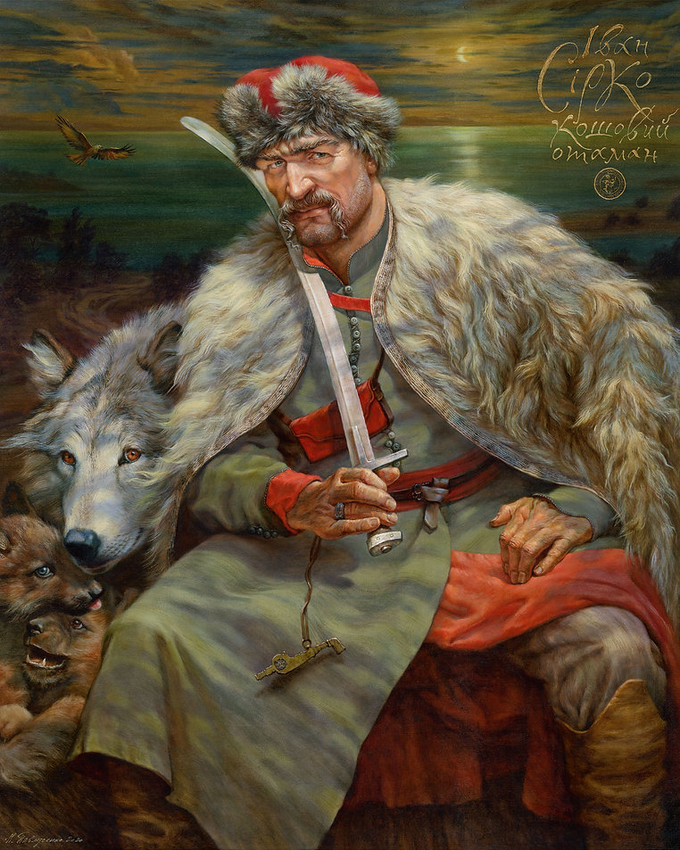

Іван Сірко: Легендарний отаман Запорізької Січі
Біографія
Походження
Іван Сірко народився приблизно в 1610 році, ймовірно, на Вінниччині або в Слобідській Україні. Його походження достеменно невідоме, але існують версії, що він був дрібним шляхтичем або козаком із давнього роду.
Козацька кар'єра
Військовий шлях Сірка розпочався ще у молоді роки. Він брав участь у численних битвах проти татар, турків та поляків, швидко здобувши репутацію безстрашного воїна та мудрого полководця.
Військові подвиги
Найвідоміші походи
-
Перемога над кримськими татарами
У 1660-х роках Сірко організував успішні походи на Кримське ханство, руйнуючи татарські поселення та звільняючи бранців. -
Бої з Османською імперією
Він очолював козацькі війська у війнах проти турків, допомагаючи європейським державам у боротьбі з Османською загрозою. -
Оборона Січі
Коли вороги атакували Запорізьку Січ , Іван Сірко неодноразово керував її обороною, завдаючи значних втрат супротивникам.
Тактика ведення бою
Іван Сірко застосовував блискавичні напади, засідки та маневрену тактику, що дозволяло йому перемагати навіть чисельно переважаючих ворогів.
Особистість та легенди
Характер
Сірко був відомий своєю безкомпромісністю, відданістю козацьким традиціям і хоробрістю. Його поважали не лише козаки, а й вороги.
-
Цікаві факти та легенди
За життя його вважали "характерником", тобто людиною, яка володіє магічними силами. Говорили, що кулі не брали його, а вороги боялися його імені. - Після смерті його праву руку зберігали козаки, вважаючи, що вона приносить перемогу.
Смерть та спадщина
Іван Сірко помер у 1680 році, залишившись символом непереможного козацького духу. Його могила знаходиться у селі Капулівка на Дніпропетровщині, куди досі приходять люди, щоб вшанувати пам’ять великого отамана.
Його образ залишився в історії як один із найвизначніших козацьких полководців, а народні думи та легенди продовжують передавати його ім'я з покоління в покоління.